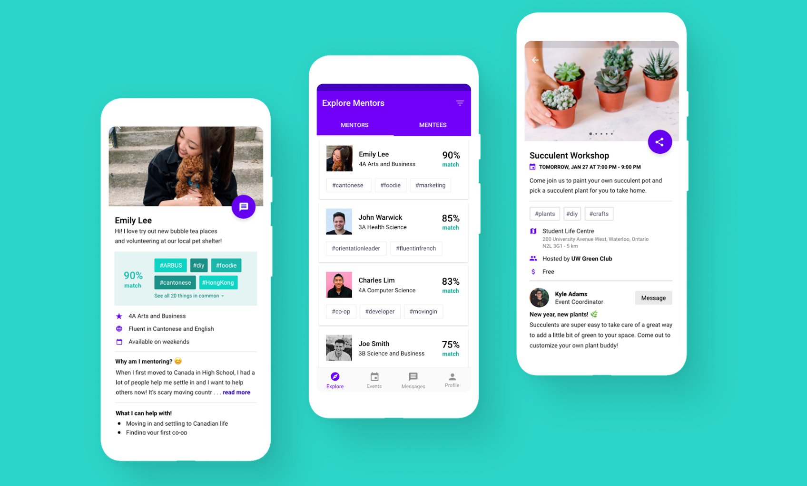
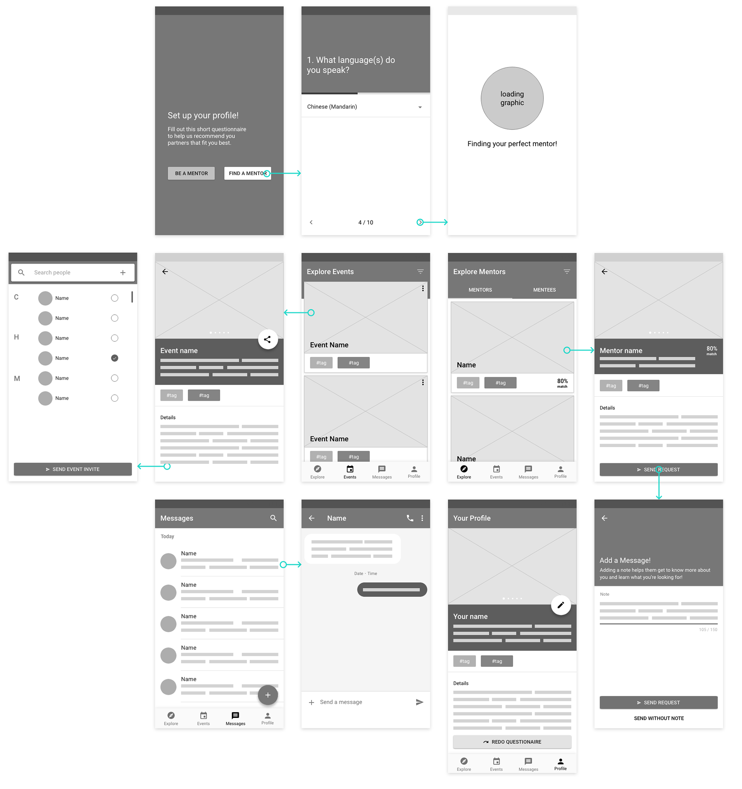
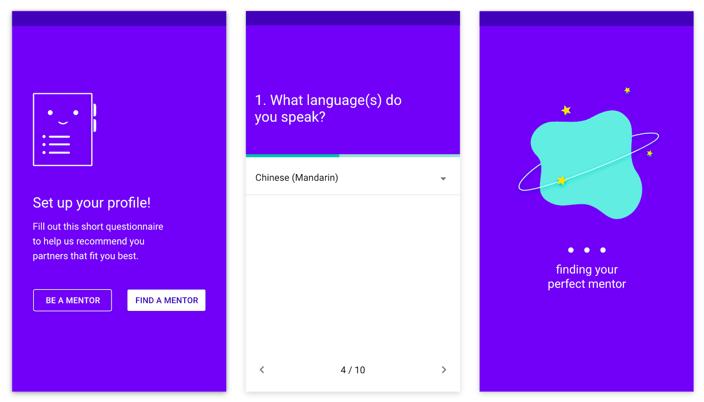
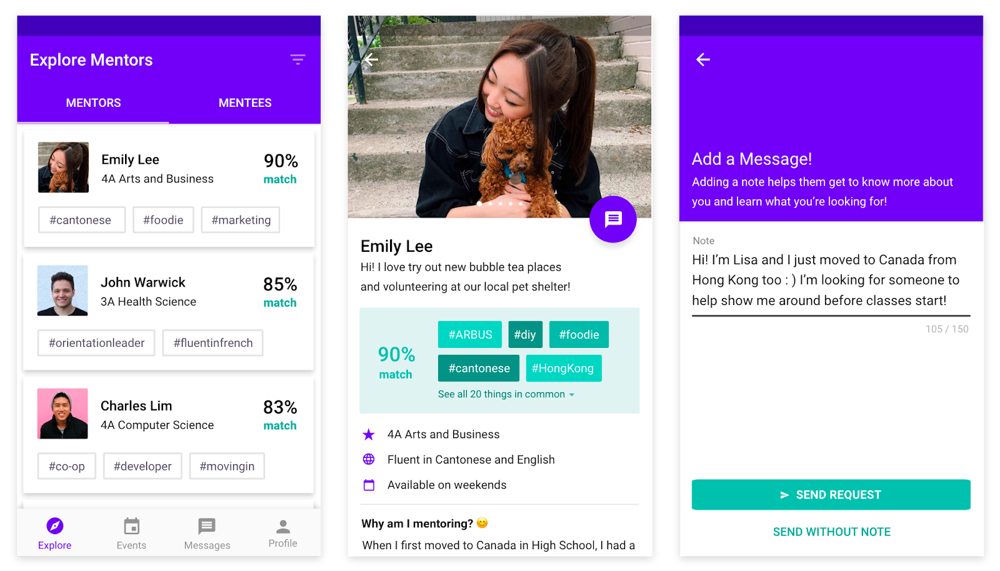
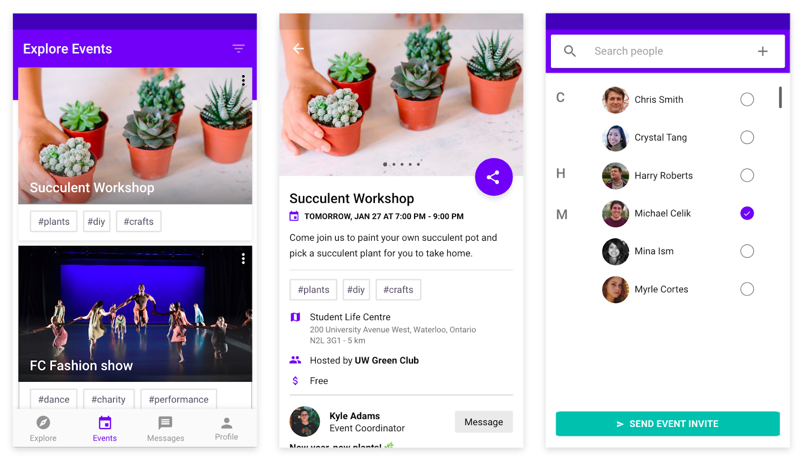

Google Design Challenge: Your Buddy
7-Day Design Sprint / Solo Project / Winter 2020
Prompt
Your school wants to strengthen the community by encouraging experienced students to connect with new students and help them adjust to campus life. Design an experience that allows mentors and mentees to discover each other.
Brainstorming
I began tackling this challenge by brainstorming different ideas for user research and what features the potential app could include. I also thought about the current options available and what I liked and disliked about each.
Target Users
For this exercise, I wanted to focus on creating a platform that connects international students with upper-year mentors as they transition to Canadian campus life. Moving out from your parents is difficult, but moving out from your parents and to another country is even harder.
“I want to be able to make friends and not feel like an outsider”
~ Student from Hong Kong
User Interviews
I wanted to understand more about their situation and the overall current ecosystem so I talked to 2 international students, 2 students who used to mentor international students, and 1 student interested in mentoring. By having a variety of interviewees, I could learn from different perspectives and their varying pain points. I also conducted these interviews in a casual open-ended style to gather natural insights and dive deep into answers.
Some questions I asked:
“What would you have changed to make it a better experience?”
“How would you mentor a new student now that you’ve gone through it?”
“What were you hoping to gain from mentoring and what did you actually learn?”
Key Pain Points
After conducting my research, these were the three key pain points I wanted to focus on:
1. It was hard to find a good mentor-mentee match
“I think they were nice but we wanted to learn different things.”
2. It was hard to plan activities together
“Meetups got boring and awkward.”
3. It was overall too intimidating
“I wanted to sign up but I was too shy and intimidated.”
Sketching and Wireframing
Sketching out the flow helped me plan the potential features I wanted to include and brainstorm the mentorship process that would solve the second key pain point:
1. Complete profile and questionnaire
2. Explore recommended mentors/mentees
3. Request to mentor or receive mentorship
4. Partner approves it and mentorship begins!
After iterating the screens, this was the final flow created in Adobe XD
I also conducted user tests with 2 potential users to make sure the features were easy to use and find.
Some questions I asked:
“Can you try to share an event with someone?”
“Can you try to edit your profile?”
Final Design Solution
1. Helping them find their perfect match
To help mentors and mentees find their perfect partner and solve the first key pain point, Your Buddy starts with a questionnaire to learn more about each user’s interests and personal life. Using that questionnaire, Your Buddy calculates a match percentage score and uses it to recommend them partners that fit their interests and needs the best. This process allows users to focus on finding and connecting with someone that fits them best faster.
Along with the match score, users can see common interests as a quick way to help users determine why or why not they will be a good fit. Users can also search between both mentors and mentees because it’s important for them to connect as well since they’re sharing the same journey.
2. Allow them to discover events and activities around them
The second key pain point was that mentors didn’t actually know what to do with their mentees. After the initial get-to-know-each-other, it was awkward and boring. By sharing campus events, partners can discover new activities that can build the bond between them while showing international students around campus.
3. Make the process more user-friendly and approachable
This section in the mentor's detail screen is key to helping users find their perfect match as the specific prompts show exactly what their goals are. Furthermore, by showing the mentor/mentees personality, it helps the process be less intimidating and solves the third pain point.
The organizer section on the details pages for events also makes the experience feel more personable. By showing the face behind the event and allowing users the option to message them, it will remind them that these events are also run by students and aren't intimidating.
Users can also see suggested events that are similar to encourage them to explore and get out of their comfort zone.
Lessons and Reflections
I had a lot of fun tackling this prompt since so many of my friends are international students and I could imagine Your Buddy helping them a lot. This was also my first time designing for an Android platform and although it was a challenge to adapt to the different guidelines, I got to learn new skills that I look forward to applying in the future! My next step is to conduct user testing again to validate that my solution solves the pain points and find new opportunities to improve. Check back later for it :)
Here are some of the curiosities I still have . . .
Should there be a rating/review system for mentors or would that put too much pressure on the students?
What types of micro-interactions could be added to make the experience more playful?
Would Your Buddy be more effective if there was a desktop version?